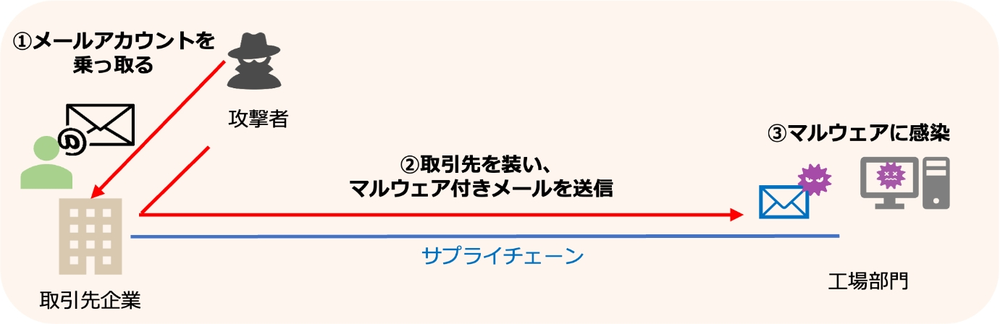

2-2-4. インシデントから得た気づきと取組
過去のインシデントから得た知見に基づき、改善取組に焦点を当てていきます。実際に発生した事例を通じて、問題点や課題を明確にし、それに対する対策や予防策を紹介していきます。
サプライチェーンを介した標的型メール攻撃
【事例の概要】
ある企業の工場部門は、取引先企業のメールアカウントが攻撃者に乗っ取られるという被害に遭いました。攻撃者は、取引先企業のフリをして工場部門の担当者に対して、マルウェアが添付されたメールを送信しました。その結果、2台の端末がマルウェアに感染してしまいました。このマルウェアは、通常の定義型ウイルス対策ソフトウェアでは検知することができませんでしたが、EDRを導入していたことで早期に検知し、感染の拡大を食い止めることができました。[4]
【問題点・課題】
- 攻撃者が取引先の正規アカウントを乗っ取っていたため、メール自体に不審な点を見つけることが困難でした。
- 取引先が乗っ取りを受けているため、自社単独では攻撃を完全に防ぐことは困難でした。
- 取引先へのセキュリティ支援やアセスメントの範囲と、それに伴う負担を自社でどの程度検討すべきかについて検討が必要でした。取引先のセキュリティに対する支援やアセスメントの範囲を検討し、自社が負担できる範囲での対策を考える必要があります。
【対策・予防策】
- 取引先のセキュリティ対策状況を把握するためには、ヒアリングシートやアンケートなどの手法を使用することが重要です。これにより、取引先のセキュリティレベルや脆弱性を明確にすることができます。
- 工場のセキュリティを強化するためには、国内で最新の工場システムを構築しているベンダーに自社工場のアセスメントを依頼することが有効な対策です。
- EDRを導入してマルウェアのエンドポイントデバイス上での活動を監視し、異常な振る舞いを検知することができます。また既にEDRを導入している場合は、ゼロトラスト、SASEのフレームワークにある機能のSWGなどを体系的に実装することで、さらにセキュリティを強化することができます。

図8. 攻撃の概要図
(出典) NISC「サイバー攻撃を受けた組織における対応事例集（実事例における学びと気づきに関する調査研究）」を基に作成
[4]:NISC.”サイバー攻撃を受けた組織における対応事例集（実事例における学びと気づきに関する調査研究）”. https://www.nisc.go.jp/pdf/policy/inquiry/kokai_jireishu.pdf , (2023-07-06).